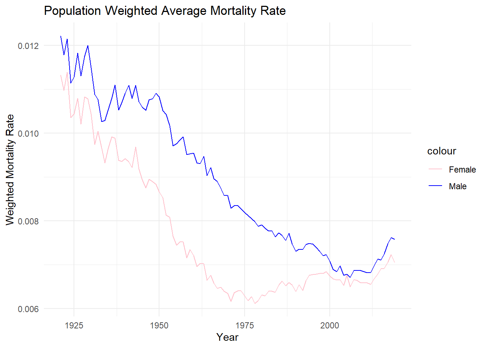

Warning: 494 parsing failures.
row col expected actual file
108 Female no trailing characters . 'https://www.prdh.umontreal.ca/BDLC/data/ont/Mx_1x1.txt'
109 Female no trailing characters . 'https://www.prdh.umontreal.ca/BDLC/data/ont/Mx_1x1.txt'
110 Female no trailing characters . 'https://www.prdh.umontreal.ca/BDLC/data/ont/Mx_1x1.txt'
110 Male no trailing characters . 'https://www.prdh.umontreal.ca/BDLC/data/ont/Mx_1x1.txt'
110 Total no trailing characters . 'https://www.prdh.umontreal.ca/BDLC/data/ont/Mx_1x1.txt'
... ...... ...................... ...... ........................................................
See problems(...) for more details.
Warning: There was 1 warning in `summarise()`.
ℹ In argument: `across(2:4, sd, na.rm = TRUE)`.
ℹ In group 1: `Age = 0`.
Caused by warning:
! The `...` argument of `across()` is deprecated as of dplyr 1.1.0.
Supply arguments directly to `.fns` through an anonymous function instead.
# Previously
across(a:b, mean, na.rm = TRUE)
# Now
across(a:b, \(x) mean(x, na.rm = TRUE))
total |>ggplot(aes(x = Year)) +geom_line(aes(y = Avg_Male_Mortality, color ="Male")) +geom_line(aes(y = Avg_Female_Mortality, color ="Female")) +labs(title ="Population Weighted Average Mortality Rate",x ="Year",y ="Weighted Mortality Rate") +scale_color_manual(values =c("Male"="blue", "Female"="pink")) +theme_minimal()

When we look at the plot, we see that the Weighted Male mortality rate was higher than the female mortality rate between the years of 1925 to 2000 because of multiple reasons, some deaths being caused due to males doing more risky/unsafe jobs which could have worker casualties and, a big contributor to male deaths would also be the world wars, where 66,000 canadians lost their lives in World War 1 and over 45,000 canadians died in World War 2. ### 5)
We will run the linear regression using the following code snippet
model <-lm(log(Female) ~ Age, data = lm_table)summary(model)
Call:
lm(formula = log(Female) ~ Age, data = lm_table)
Residuals:
Min 1Q Median 3Q Max
-0.9692 -0.3194 -0.1341 0.2734 4.7993
Coefficients:
Estimate Std. Error t value Pr(>|t|)
(Intercept) -10.062281 0.121345 -82.92 <2e-16 ***
Age 0.086891 0.001997 43.51 <2e-16 ***
---
Signif. codes: 0 '***' 0.001 '**' 0.01 '*' 0.05 '.' 0.1 ' ' 1
Residual standard error: 0.6291 on 104 degrees of freedom
Multiple R-squared: 0.9479, Adjusted R-squared: 0.9474
F-statistic: 1893 on 1 and 104 DF, p-value: < 2.2e-16
Here, we have a regression coefficient of 0.086891 for age. Noting the fact that the female mortality rate in our model is logged, this implies that keeping everything else constant, for every 1 unit increase in Age of a female, we would see an 8.6891% increase in the mortality rate.